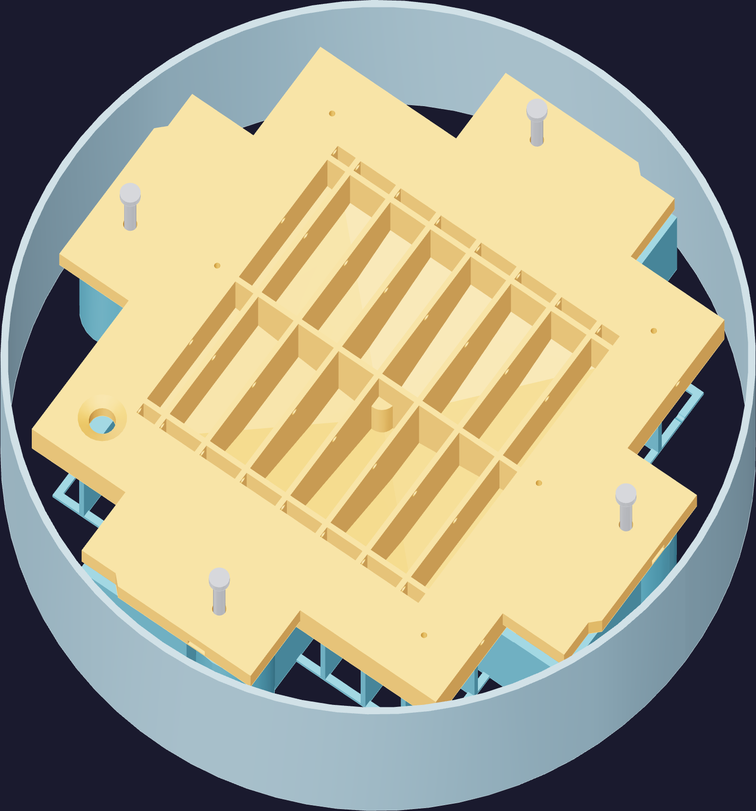

Steel20
Dry-run it in the chamber
The last thing before silicone. Assemble the mold empty, put it in the vacuum chamber, pull it down and let it back up. It costs ten minutes and it is the only way to find a coating that lifts or a channel that closed, while the mold is still clean.
- Measure the chamber, not the spec. The mold's widest points are the cavity's guide-tower corners. The nominal clearance to the chamber wall is about 7 mm on the radius — and your catch tray, its rim, and whatever holds the core down all have to live inside that too.
- Stand it so the backing-air exits stay open. A flat shelf under the cavity, or a clamp board over the core, still leaves them breathing; a blanket or a soft mat does not.
- Pull down, hold, admit air slowly.
- Then take it apart and look. Distortion at the skirt or the parting land. Coating lifted, crazed or blistered. Any channel or port that has closed. Run the 32 mm stroke again and confirm nothing has changed.

The guide's call, not spec
Nothing in the source specifies what holds the core down during the cast — only
that something must, that the jacks are lifting devices and do not clamp, and that the
backing-air exits must stay uncovered. A flat board across the core's four arms with dead
weight on it satisfies all three, keeps the load on the arms rather than the plate, and
leaves the ports and the open back clear. Work that out now, on the dry run, with the
chamber lid closing over it.